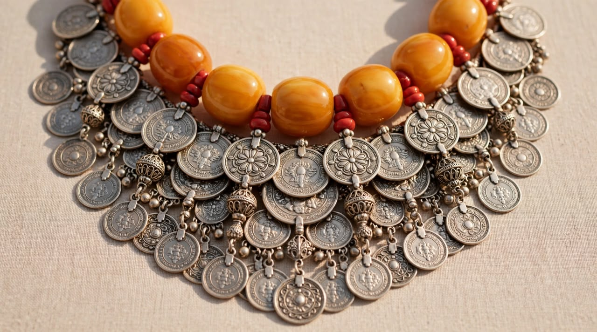
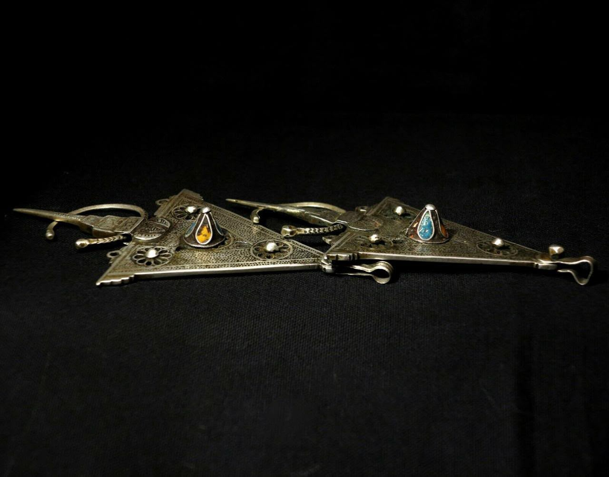
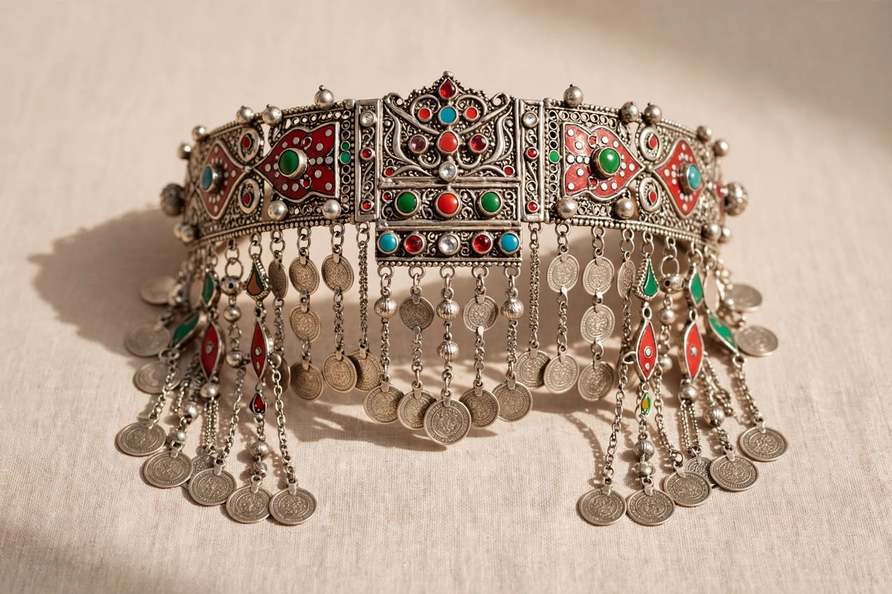
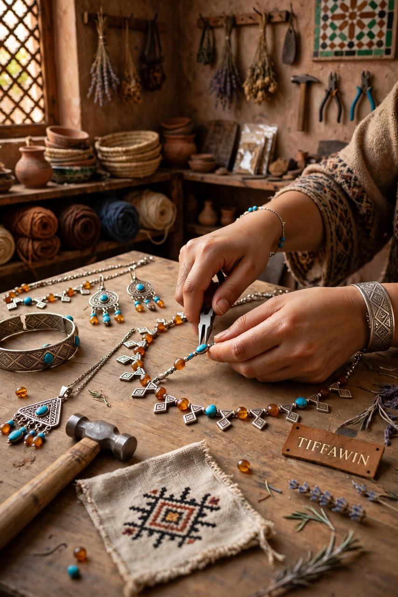

Tifilit Louban
Collier en Ambre véritable de Souss. Chaque perle est unique, protège et donne de la lumière à ton visage.
650 DH 550 DH

Des bijoux amazighs faits à la main à Tiznit, entre argent, corail et louban
Voir la collection
Collier en Ambre véritable de Souss. Chaque perle est unique, protège et donne de la lumière à ton visage.
650 DH 550 DH

Fibule traditionnelle de Tiznit, argent et émail. Le symbole de la famme Amazighe, pour attacher ta Melhfa avec élégance.
450 DH 380 DH

Frontale de la mariée de Souss, en argent gravé à la main à Tiznit. La pièce qui complète ta tenue pour les mariages et les fêtes.
550 DH 450 DH

TIFFAWIN est née d'un amour pour les bijoux amazigh de Souss. Notre mission faire revivre cet héritage avec une touche moderne, pour que chaque femme porte un bijou qui a une histoire et une àme.